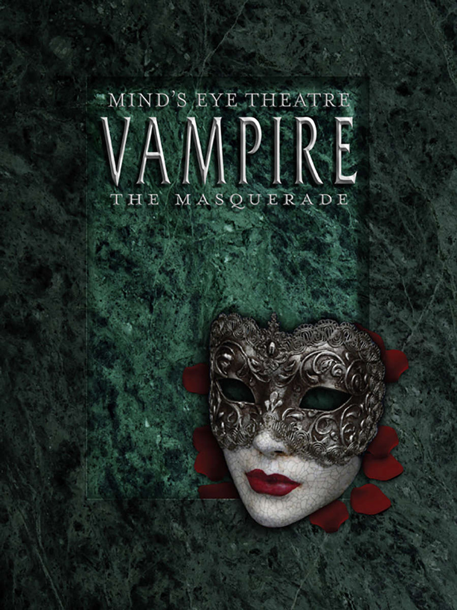
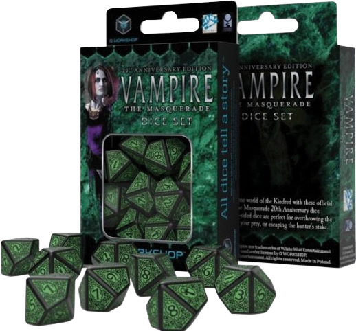
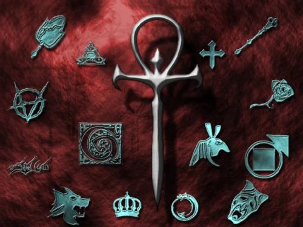
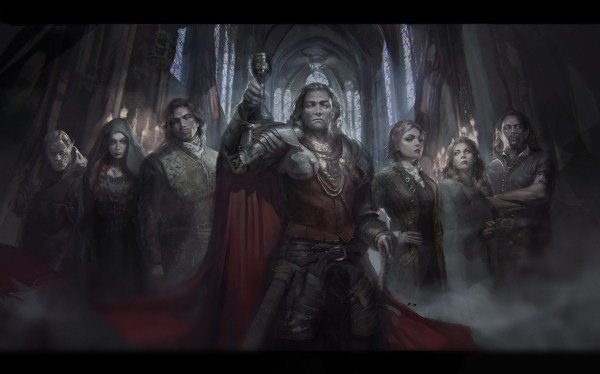
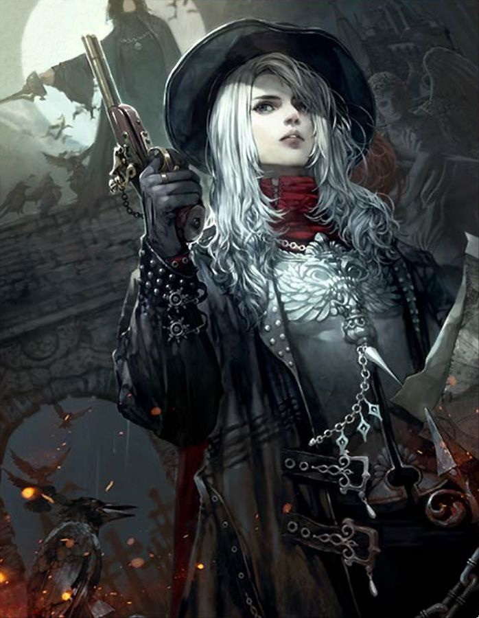
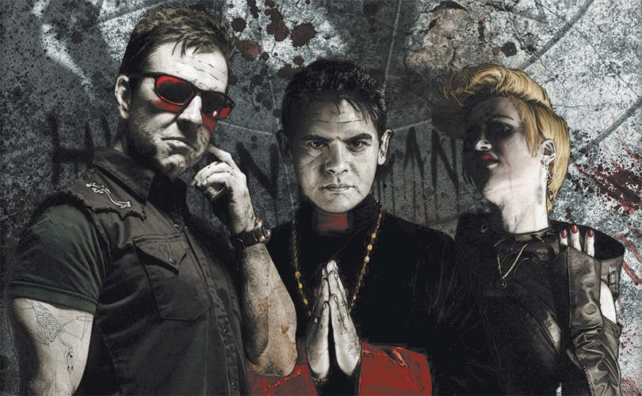
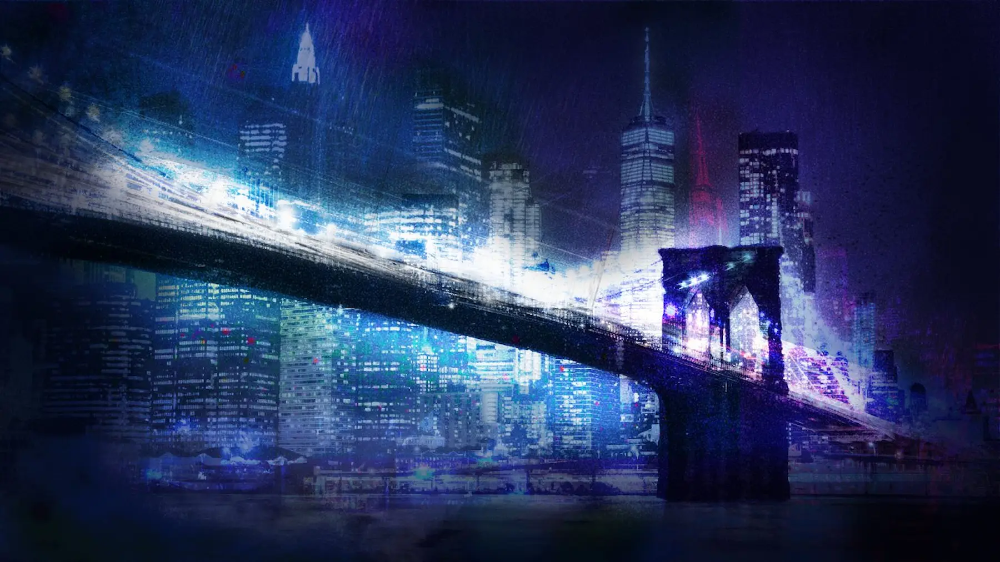
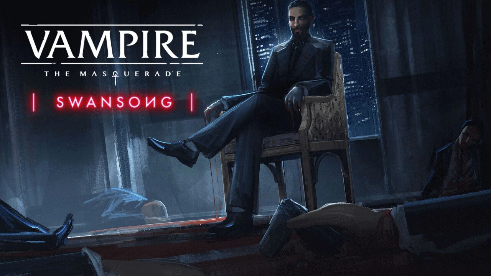

"Vampiro: La Mascarada" es un juego de rol de mesa (RPG) que se
desarrolla en un mundo ficticio ambientado en el universo de la
oscuridad y el horror gótico. El juego fue creado por Mark Rein-Hagen
y lanzado por primera vez en 1991 por White Wolf Publishing. "Vampiro:
La Mascarada" es parte del mundo ficticio conocido como el Mundo de
Tinieblas (World of Darkness en inglés), que incluye otros juegos de
rol como Hombre Lobo: El Apocalipsis y Mago: La Ascensión.


El escenario principal de "Vampiro: La Mascarada" es una versión
alternativa de nuestro mundo moderno, donde los vampiros existen en
secreto y manipulan los hilos de la sociedad desde las sombras. Aquí
tienes algunos aspectos clave del mundo en el que se desarrolla el
juego:
Clanes Vampíricos: Los vampiros en "Vampiro: La Mascarada" se
dividen en diversos clanes, cada uno con sus propias características,
habilidades y filosofías. Algunos de los clanes más conocidos incluyen
los Ventrue, los Brujah, los Nosferatu y los Tremere.
Ver Más

Sociedad Vampírica: Los vampiros viven en una sociedad secreta
y jerárquica. La Camarilla y el Sabbat son dos de las facciones
principales que compiten por el control y la influencia dentro de este
mundo. La Camarilla busca mantener el orden y el secreto de la
existencia de los vampiros, mientras que el Sabbat es más anárquico y
violento.

Cazadores de Vampiros: Los cazadores de vampiros, conocidos
como cazadores de la Inquisición, los Cazadores de Sangre o los
Cazadores de Demonios, son mortales que se dedican a la caza y
eliminación de los vampiros. Están en constante conflicto con los
vampiros y añaden un elemento adicional de peligro al mundo del juego.


Ciudades Anfitrionas: Aunque "Vampiro: La Mascarada" puede
desarrollarse en diversas ciudades de todo el mundo, la ciudad
ficticia de Nueva York, conocida como Nueva York Nocturna (New York by
Night), es uno de los escenarios más populares y emblemáticos del
juego.

Política y Manipulación: Gran parte del juego se centra en la
intriga política y la manipulación entre los vampiros. Los personajes
jugadores (PJ) suelen formar parte de esta política vampírica,
buscando influencia, poder y supervivencia en un mundo lleno de
conspiraciones y traiciones.

El mundo de "Vampiro: La Mascarada" es oscuro, lleno de secretos y
peligros, y ofrece a los jugadores la oportunidad de explorar temas
como la moralidad, la identidad y la lucha por la humanidad en medio
de la eternidad. Es un juego de rol muy influyente que ha tenido un
impacto significativo en la cultura del juego de rol y la cultura
popular en general.